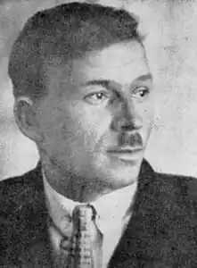

Микола Куліш
(18 грудня 1892 — 3 листопада 1937)
Іван Тобілевич створив клясичну драму народного театру, Леся Українка — клясичну європеїзовану українську драму. Микола Куліш був творцем модерної драми українського революційного відродження. Три з чотирьох шедеврів Куліша — "Народній Малахій" (1928), "Мина Мазайло" (1929), "Маклена Граса" (1933) — послужили драматургічним матеріялом для вершинних режисерських творів Леся Курбаса і його театру "Березіль", що вивели український театр на рівень ліпших сучасних театрів світу. Четверта неперевершена драма Куліша "Патетична соната" (1930) з величезною втратою для Курбаса, "Березоля" і всього українського театру була заборонена. Чого не можна на Україні — те дозволено в Росії: відомий керівник Московського Камерного театру Таїров ставив у російському перекладі "Патетичну сонату" в Москві, де вона йшла з аншлягами від 19 грудня 1931 по 24 березня 1932 і здобула Кулішеві від фахової критики славу найбільшого в СРСР драматурга. За десять років драматургічної праці Куліш написав 14 п'єс — всі вони були по черзі заборонені; з 1956 — 57 року з них "реабілітовано" в СРСР дві початківські п'єси Куліша — "97" (1924) і "Комуна в степах" (1925). Біля половини всіх п'єс Куліша вважається поки що загубленими. Микола Куліш належить до "командної" верхівки мистців Розстріляного Відродження — поруч із Тичиною, Хвильовим, Рильським, Довженком і Курбасом. Їх одноліток — він дебютував дещо пізніше, разом із молодшою на 10 — 15 років групою нових могутніх талантів, на чолі з Бажаном і Яновським. Тому, як і ті молодші, мав дуже короткі терміни для творчого самовияву: це роки 1926 — 33, коли настала друга і остання — критична фаза відродження. Вже в перші роки цієї другої фази були подавлені неоклясики, Вапліте, Марс, Академія Наук, а потім почався і геноцид над українським населенням. Щоб у цей час дати театральні шедеври, повносилі духом і протестом молодого відродження, Куліш і його театральний учитель і побратим Курбас мусили були йти в останні контратаки на вірну смерть, яка й спіткала їх на північній російській каторзі. Микола Куліш був франківський "цілий чоловік". Характер його творів і характер його особистости, життя і долі неподільні. Він родився 6 грудня 1892 в селі Чаплине Дніпровського повіту (центр Олешки) на Херсонщині. Суворі іспити степового дитинства — найми з восьми років, злидні селянської родини (батько Гурій — наймитував), рання смерть спрацьованої матері, життя в сирітському будинку — не перешкодили упертому і виключно здібному й охочому до науки хлопцеві закінчити сільську школу в Чаплиному (1901 — 1905) і вищу початкову школу (1905 — 1909) та приватну гімназію (1909 — 1913) в Олешках. Від 1905 до 1922 Олешки над низовим Дніпром були його рідним містом, давши йому добре знання українського провінційного міщанства. Він з дитинства не проминав ні одної шкільної бібліотеки чи іншої нагоди прочитати книжку і вже в 14 років залюбки розмовляв із дорослими на теми світової літератури (Мольєр, Шекспір, Достоєвський...), а своїми сатиричними віршами і редагуванням учнівських журналів та аматорськими виставами звернув увагу вчителів на свою мистецьку обдарованість. 1914 року, маючи добру клясичну середню освіту, Куліш вступає на історико-філологічний факультет Одеського університету. Перша світова війна перевернула його далекосяжні освітні пляни, і він, закінчивши школу, два роки (від осени 1915 до осени 1917) воює на протинімецьких фронтах коло Вільно, на Волині, в Галичині. Куліш був лицар і в любові, і у війні. Мобілізований в Одесі до війська, він, ризикуючи карою за дезертирство, вирвався до Олешок попрощатися і заручитися із своєю дівчиною Антоніною, зумів, будучи вже на західньому фронті, одружитися з нею і мав до кінця війни дочку Олю і сина Володимира. Це анітрохи не перешкодило йому бути першорядним вояком. Працюючи в штабі, Куліш, мавши рангу штабс-капітана, добровільно пішов у бої на передову позицію, був двічі ранений (одного разу гарматним вибухом його викинуло на передок гармати). У вільні години писав сатиричні вірші, а також одноактові п'єски для солдатського драмгуртка. Був він улюбленцем свого полку, який на початку революції 1917 вибрав його депутатом на військовий з'їзд Західнього фронту, що тривав у Луцькому цілий місяць. Добравшись восени 1917 року до родини в Олешки, Куліш з головою поринув у кипучу працю і боротьбу, у той "світлоярливий патос" визволення і державного та культурного відродження нації, що його він пізніше відтворив у "Патетичній сонаті". Кулішів характер химерно поєднував у собі найретельніший практицизм і найпоетичніший патос. Він організував у Дніпровському повіті масове культурно-політичне українське товариство "Просвіта", став його головою; водночас його обрали на голову міської управи. Щоб дати заробіток і товари населенню, Куліш скасував непомірне велику царську тюрму в Олешках, почавши перебудовувати її на майстерні. Німецька окупація, ліквідуючи органи української республіканської влади, посадила Куліша в ту саму олешківську тюрму на сім місяців. Українське повстання визволило Куліша, і знову він став на чолі міської управи Олешок. На порозі 1919 року від моря почали наближатися до Олешок антанто-денікінські десанти, стріляючи і вішаючи по дорозі причетних до української революції і влади. Куліш пристав до тих, що не послухали наказу Директорії відступати і здавати Антанті міста без бою. Він організував у Херсоні 1500 олешківських утікачів у "Перший Український Дніпровський Полк", що вкрив себе славою в боях з напасниками. Нам не відомо, чи полк Куліша формально належав до військ Григор'єва-Тютюнника, що скинули в море десанти Антанти, але фактично це мусіло бути так. До речі, Юрій Яновський, пізніше близький приятель Куліша, описав полк Куліша у своїх "Вершниках" під іменем "олешківського батальйону Шведа", а самого Куліша під іменем Данила Чабана, що його названо "майбутнім письменником". З цензурних міркувань ("Вершники" появились 1935 року, коли Куліш сидів на Соловецькій каторзі) Яновський називає "олешківський батальйон" Куліша більшовицьким (порівняй "Спогади про Куліша" його дружини Антоніни Куліш, вміщені разом із драматичною трилогією Куліша і його листами в книжці: Микола Куліш, ТВОРИ, Нью-Йорк, УВАН, 1955, стор. 365 — 433). Можливо (хоч даних про це не маємо), в той час Куліш був зв'язаний з боротьбистами, що мали тоді вплив у тому районі і в тих подіях. Влітку 1919 року, під час другого наступу Денікіна, Куліш разом із червоною армією з боями відступає на північ України, але, не бажаючи опинитись на еміграції в Росії, іде в денікінське запілля. Потрапляє під розстріл, хворіє тифом, нарешті добирається до рідних Олешок, заставши там уже більшовицьку владу. В Олешках Куліш працює (аж до переїзду в Одесу 1922) інспектором народної освіти, закладаючи українські школи, дитячі притулки і садки та склавши власний український буквар "Первинка". В той час органи ЧК посадили його знову у ту ж таки олешківську (потім перевели в херсонську) тюрму. З-під розстрілу Куліша врятував олешківський виконком, що взяв на поруки знаного і любленого в Олешках Куліша. 1922 року олешківська організація КП(б)У приймає Куліша в члени партії за його заслуги в ділянці народної освіти. Куліш був свідком страшного голоду в степовій Україні 1921 року, який навіяв йому тему його першої драми "97", що її він закінчив уже в Одесі. Від 1924 року "97" ставилась у Харкові та інших містах України, а пізніше і в інших республіках СРСР, створивши Кулішеві репутацію "основоположника української радянської драми". 1925 року з таким само успіхом пішла в театрах України та інших республік друга драма Куліша "Комуна в степах". Обидві п'єси мали пропагандивний характер, стиль їх був натуралістично-побутовий, і хоч в них видно було іскри справжнього таланту, та все ж вони не віщували ясно в Куліші майбутнього великого драматурга. На них позначилась тодішня відірваність Куліша від мистецьких центрів Харкова і Києва, незнайомство з модерним мистецьким рухом, що для нового життя шукав нових естетичних засобів. Попрацювавши інспектором одеської облнаросвіти (1922 — 25), Куліш, за порадою наркома освіти Олександра Шумського, переселяється до Харкова на посаду шкільного інспектора Наркомосвіти УРСР. Він об'їжджає всю Україну, пізнавши нові колоніяльні злидні і прагнення українського села. Переїзд до Харкова і знайомство та дружба Куліша із Хвильовим, Тичиною, Лесем Курбасом та його театром "Березіль" вчинили справжню революцію у творчості Куліша. Першого ж року життя в Харкові (1925 — 26) Куліш закінчує три п'єси, які одразу перекинули місток від побутового натуралізму його двох перших п'єс до тодішнього харківського неоромантизму. Це драма "Зона", інтермедія "Хулій Хуліна" та комедія "Так згинув Гуска". В них виявився комедійний талант Куліша, шукання нових форм драми і гостра та незалежна суспільно-критична думка. Ці високі мистецькі й суспільні якості зразу відчула цензура, не дозволивши до вистав ні одної із трьох п'єс. Якраз у той час Сталін оголосив похід проти Шумського. Хвильового і ВАПЛІТЕ, даючи ясно зрозуміти, що політика "українізації" повинна провадити не до культурної, а тим більше політичної суверенности України, а всього лиш до формальної "українізації" і закріплення рабського малоросійства. Куліш, і як українець і як комуніст, ненавидячи таку імперіялістично-реставраторську політику Москви, кинув всі свої сили на боротьбу з нею. Як діяч, він став у листопаді 1926 року президентом ВАПЛІТЕ, замінивши її лідерів Хвильового, Ялового і Досвітнього, що політично були вже "битою картою", як битою буває в атаці перша передова лава. Аж до примусової ліквідації ВАПЛІТЕ 14 січня 1928 Куліш, запеклий у боротьбі, обороняв ВАПЛІТЕ і об'єднаних у ній ліпших українських письменників. Огірчений нахабними діями російських імперіял-шовіністів з ЦК ВКП(б) і розгромом ВАПЛІТЕ, Куліш передумав і переоцінив увесь шлях української революції, українсько-російських взаємин, зокрема шлях українських комуністів та свій власний. З другого боку, він поглиблював свої студії з історії світового театру й драми.